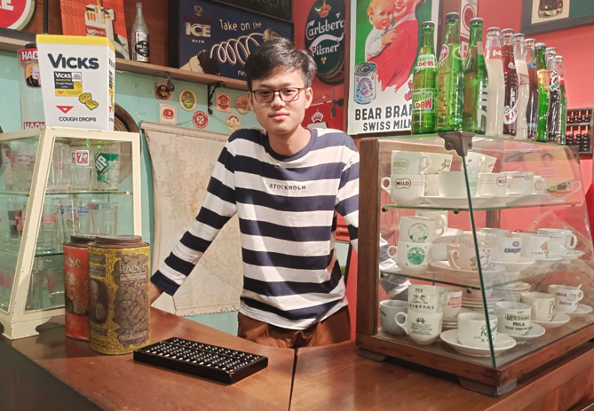

Hi, It's Vincent
I'm a / an
I’m a Computer Science student at Bina Nusantara University, specializing in Intelligent Systems/Artificial Intelligence. I’m diving into Python, machine learning, and AI tools, experimenting with projects to understand how they work. My portfolio reflects my journey of learning new concepts and applying them in practical ways. I’m excited to keep building my skills and explore more advanced AI techniques as I grow. Feel free to check out what I’ve been working on so far!
